This document relies on the concept of a Region of Interest (ROI) as defined in EPUB Region-Based Navigation. ROIs are used in guided navigation through the concept of navigation sequences. The latter are ordered sequences of Regions of Interest that a Reading System will render in turn as the User navigates through the work. There can be one or more of these sequences to a document (e.g., panels in a comic, articles in a magazine), and each sequence can include nested subregions of interest, such as article components, to be navigated as part of the guided flow.
Comics
The terms described in this section are defined in the EPUB 3 Structural Semantics Vocabulary and can be use without a prefix in the epub:type attribute.
panel
The panel term is used to identify a single frame or drawing. The following image shows a single panel highlighted in green:
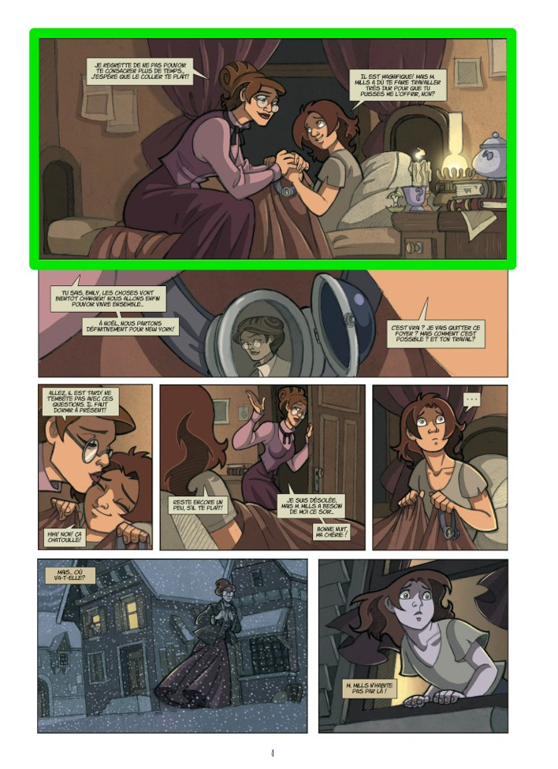
By identifying each panel, a Reading System can provide sequential navigation through the publication.
For example the following example shows how an image can be broken down into a set of six individual panels:
A reading system that supports region-based navigation could then provide a guided experience similar to the following on a phone-sized screen:
panel-group
The panel-group term i dentifies a group of panels (e.g., a strip), which allows the reading system to isolate those panels to focus the reader’s attention.
For example, a page could consist of three panel groups, each consisting of three panels, as shown in the following illustration:
Each of these panel groups will define its child panels in nested ordered lists, as shown in the following markup:
The reading system can then present the full panel group followed by each individual panel before moving on to the next group, as shown in the following image:
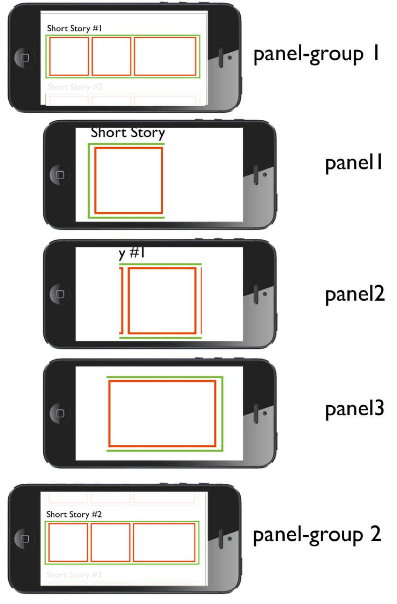
balloon
The balloon term identifies a region that contains the words, spoken or thought, of a character.
For example, a dialogue balloon is highlighted in green in the following image:
Text areas can be used in navigation sequences in the same way as balloons. The reading system can zoom on the subregions defined by text areas in the same way as it can zoom balloons.
Alternatively, the text area inside a balloon could be identified using such a region as in the example below. The green text area can be used to refine the location of the text inside the (red) balloon.
sound-area
The sound-area term identifies an area on the page that represents a sound.
For example, the sound of a door closing is highlighted in green in the following image:
I n the following image, the article spans two pages, which results in two such regions of interest (highlighted in blue):
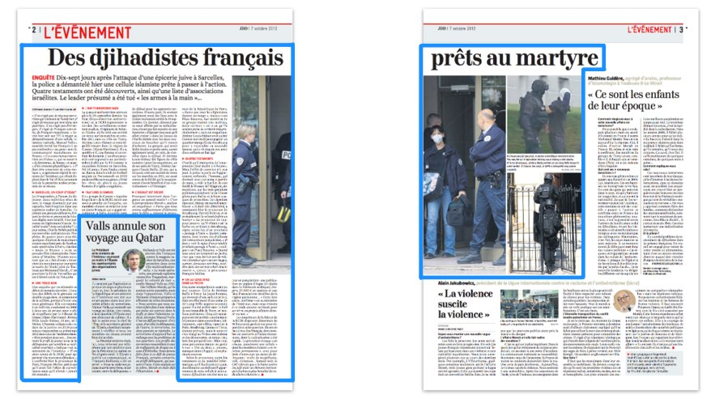
The markup for these regions would be as follows:
<li epub:type="msv:article-region">
<a href="page02.xhtml# xyn=percent:1,6,100,6,100,98,60,98,60,52,23,52,23,98,1,98 "/>
<!-- sub-regions such as the article title, authors, etc. would be defined in a ordered lists here -->
</li>
<li epub:type="msv:article-region">
<a href="page03.xhtml# xyn=percent:0,6,66,6,66,10,62,10,62,75,0,75 "/>
…
</li>
In the same way that a reading system uses the "panel-group"term in comics to isolate a strip/story on the page, the use of msv:article-region in a guided reading context can be used to isolate the article from the rest of the page. The reading system could opt to blur, hide or mask the page content that is outside the article when inside the navigation sequence.
prism:title
The prism:title term identifies a region that contains the title of the article, as highlighted in the blue box in the following image:
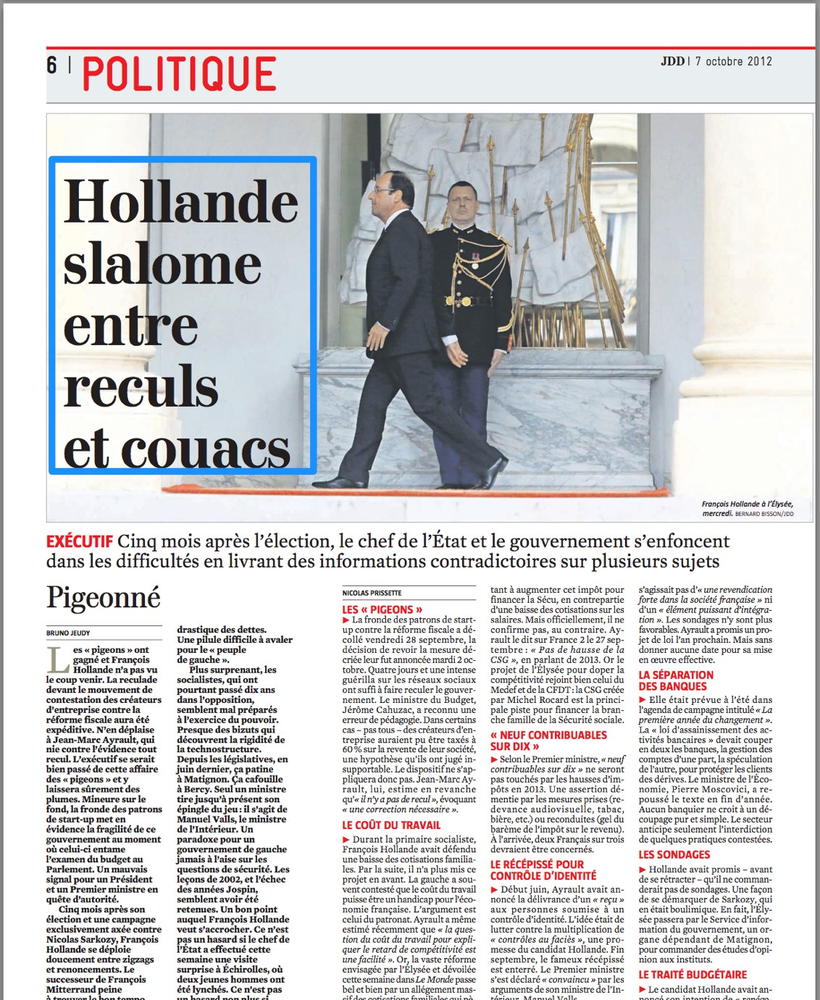
The title can be identified as top-level region of interest, or can be nested inside of an msv:article-region . In both cases, the markup for the region is the same:
In the case of sequential navigation, the title is expected to be displayed in full on the device.
To improve the readability of the title, do not include related items like the deck and subtitle in the region.
prism: subtitle
The prism:subtitle term identifies a region that contains the subtitle. The subtitle differs from a deck in that appears in close proximity to the title and typically only one subtitle is present , whereas the deck can be located anywhere and there could be multiple instances.
An article subtitle is highlighted in blue in the following image:
The subtitle can be identified as top-level region of interest, or can be nested inside of an msv:article-region . In both cases, the markup for the region is the same:
In the context of navigation, the subtitle will typically be treated similar to the title.
prism:deck
The prism:deck term identifies a region that contains a summary of the article or a block of text that augments the title or provides a "teaser" to attract a reader. A deck may span multiple lines, and an article may have multiple decks.
An article deck is highlighted in blue in the following image:
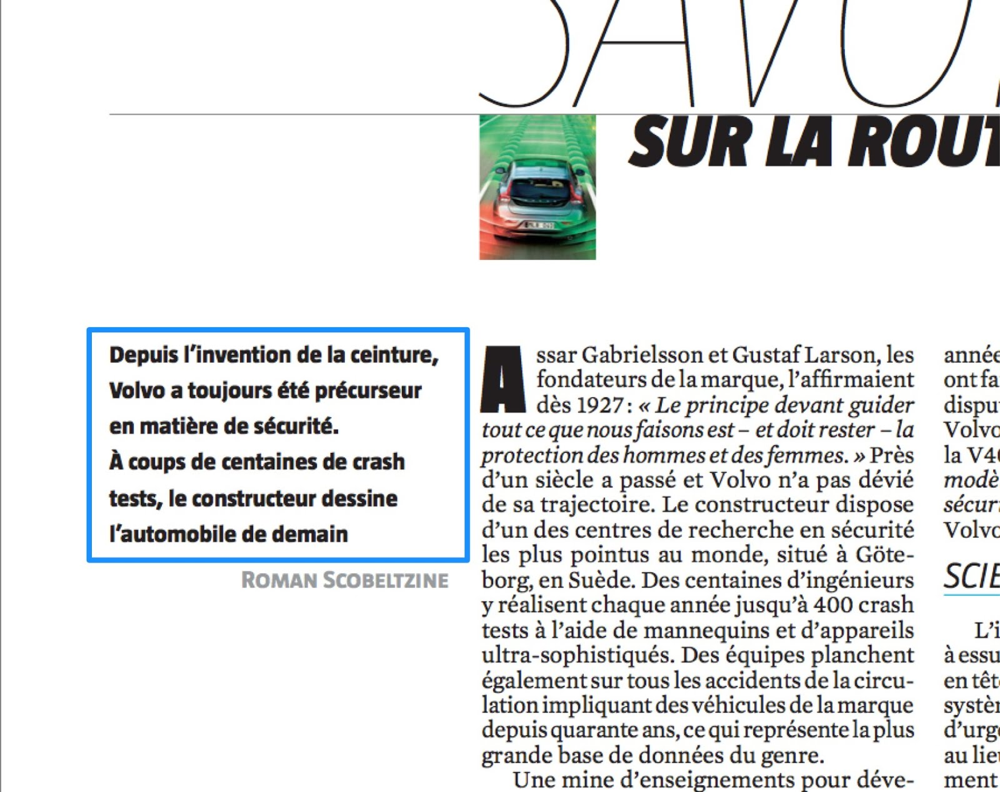
The deck can be identified as top-level region of interest, or can be nested inside of an msv:article-region . In both cases, the markup for the region is the same:
In the context of navigation, the deck will typically be treated similar to the title.
prism: byline
The prism:byline term identifies a region that contains information about the author(s). In many cases this region may simply contain the author name, but in some situations it will also contain additional context, such as position, role or context of the article.
Bylines typically appear next to the title of the content. The prism:byline term can also be used for the dateline.
An article byline is highlighted in blue in the following image:
The byline can be identified as top-level region of interest, or can be nested inside of an msv:article-region . In both cases, the markup for the region is the same:
In the context of navigation, the byline will typically be treated similar to the title .
prism:contributors
The prism:contributorsterm identifies a region that contains information about the contributor(s). In many cases this region may simply contain the contributor name, but in some situations it will also contain additional context, such as position, role or context of the article.
I n the following image, the contributor is mentioned at the end of the article as being the one person who conducted the interview (as opposed to the author who wrote the article):
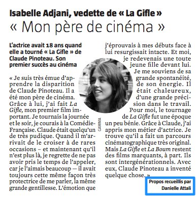
The contributors can be identified as top-level region of interest, or can be nested inside of an msv:article-region . In both cases, the markup for the region is the same:
In the context of navigation, contributors are typically treated similar to the article text .
msv:media
The msv:media term identifies a region that contains an image, illustration, video, slideshow, animation or other piece of media allowed by the format.
A picture is highlighted in blue in the following image:
Media items can be identified as top-level regions of interest, or can be nested inside of an msv:article-region . In both cases, the markup for the region is the same:
It is expected that reading systems will display media regions in full, scaling to fit the available viewport.
For an example of media that spans two pages, see Synthetic Regions in the EPUB Region-Based Navigation specification. An example is provided in Appendix A.2 of that specification .
prism:caption
The prism:caption term identifies a region that contains text that identifies and explains an image or illustration or other piece of media .
The caption for the picture is highlighted in blue in the following image:
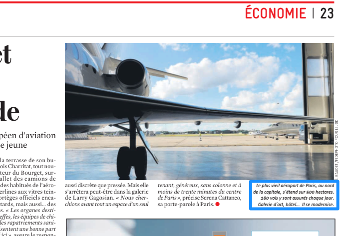
Captions can be identified as top-level regions of interest, or can be nested inside of an msv:article-region . In both cases, the markup for the region is the same:
The caption typically follows its related media in the navigation sequence.
prism:credit
The prism:credit term identifies a region that contains the credits for an image, illustration, or other piece of media .
A picture credit is highlighted in blue in the following image:
Credits can be identified as top-level regions of interest, or can be nested inside of an msv:article-region . In both cases, the markup for the region is the same:
The msv:article-text term identifies a region of article text. An article may have more than one article text region (e.g., one for each column).
The following image shows five columns of article text highlighted in blue:
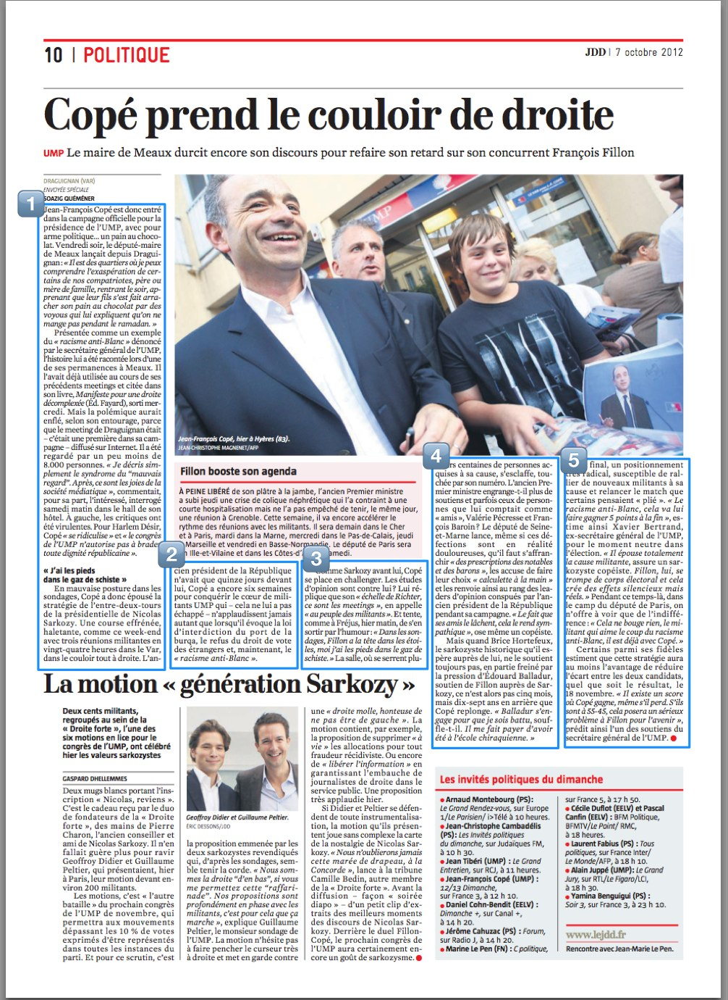
The article text can be identified as top-level regions of interest, or can be nested inside of an msv:article-region . In both cases, the markup for the region is the same:
The article text is the most important type of region for magazine navigation because it is the portion of the document that contains the narrative content. The article text is often laid out in columns in magazines and newspaper to increase readability, however, which can make it difficult to access on small screens.
A reading system is expected to handle navigation “along” the box for these adjoining regions, which is achieved by having the reading system break a box into smaller parts that have the aspect ratio of the screen:
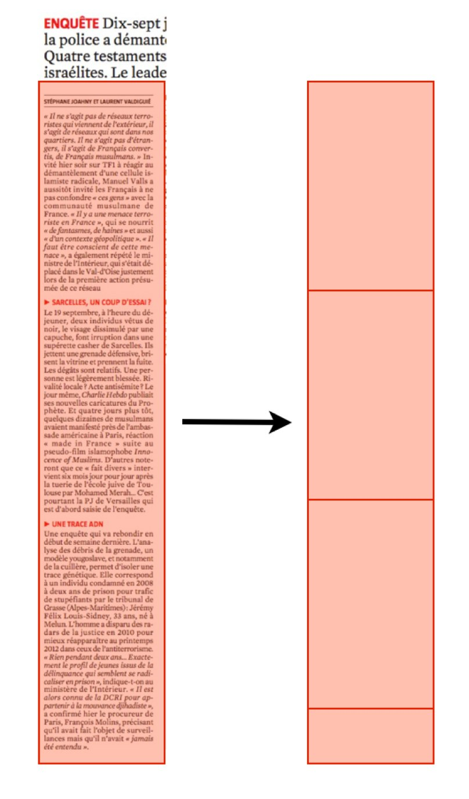
If the reading system simply moves from one region to the next, only ensuring its visibility on screen, it will lead to a poor user experience:
the text will not always be readable
the zoom factor on the page could change from one box to the next resulting in text that has a different apparent size between regions
The following graphic highlights these problems:
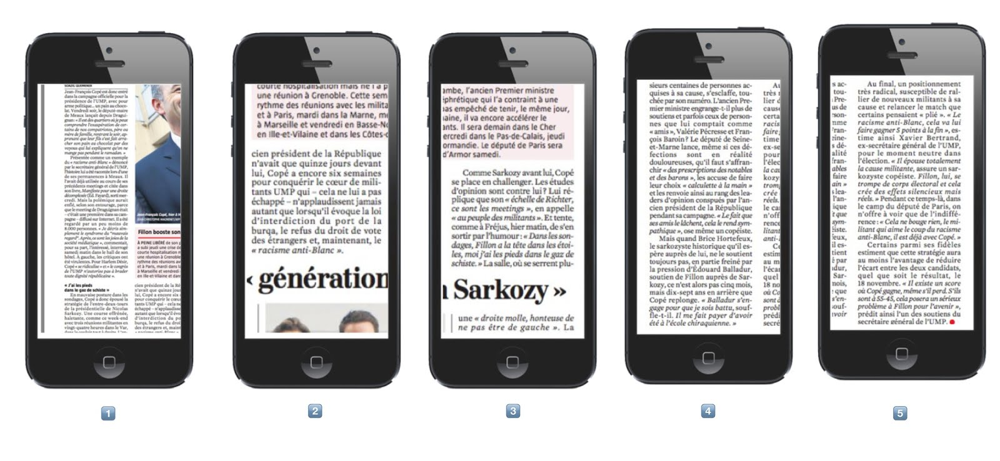
Reading systems are expected to adjust the zoom so that the article text box fits in width (only for horizontal writing modes) and then move along the box in order to see all text.
prism:box
The prism:box term identifies a region that contains text that is outside the linear flow of the article (but is still associated with the article, unlike an advertisement or a separate article) , whether rendered in a box or another shape.
The following images show examples of these kinds of asides:
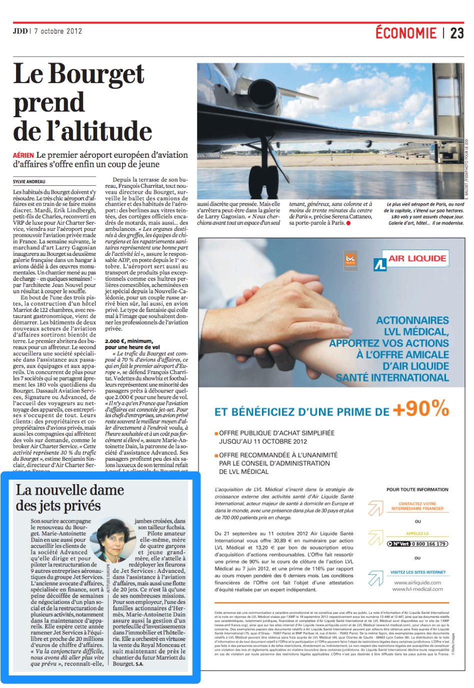 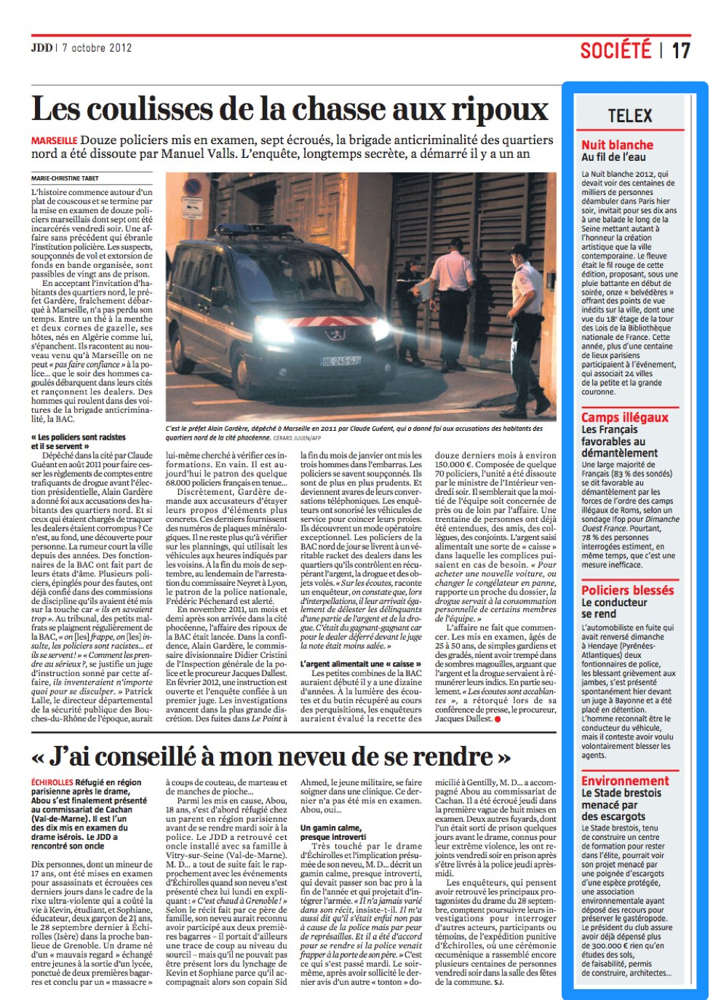
The box content can be identified as top-level regions of interest, or can be nested inside of an msv:article-region . In both cases, the markup for the region is the same:
Box content is typically navigated to after the article text of the page.
prism:advertisement
The prism:advertisementterm identifies a region that contains a piece of material promoting a product, service, or event whose presence is paid for.
The following image shows an advertisement highlighted in red:
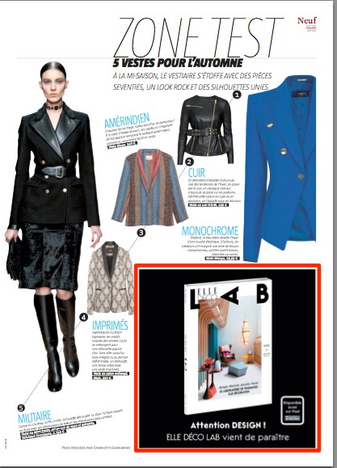
An advertisement can be identified as a top-level region of interest, or can be nested inside of an msv:article-region . In both cases, the markup for the region is the same:
Publishers will typically want to keep the advertisement as part of a reading sequence. In the case of an article spanning several pages with some advertisements interspersed, the reading system should not skip the ads during guided navigation, but could rearrange their position (e.g., after all article text) .
prism:pullQuote
The prism:pullQuote term identifies a region that contains a snippet of the content that stands out from its surroundings to grab attention
The following image shows a pull quote highlighted in blue:
Pull quotes can be identified as top-level regions of interest, or can be nested inside of an msv:article-region . In both cases, the markup for the region is the same:
Pull quotes are useful to identify inside a navigation sequence as the reading system might choose to create a specific effect or apply a specific logic in the fly-over sequence.
By choosing to ignore the pull quote, there is no loss of material or loss of continuity. Since a pull quote can be located in a portion of the page that is far away from the original position of the snippet, the reading system can decide whether it is worthwhile to navigate to this region or not.
Appendix A. Acknowledgements
All content used to illustrate comics comes from the following titles and has been used with authorization from the publishers: